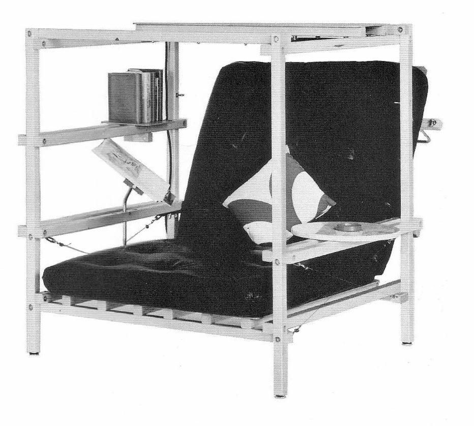
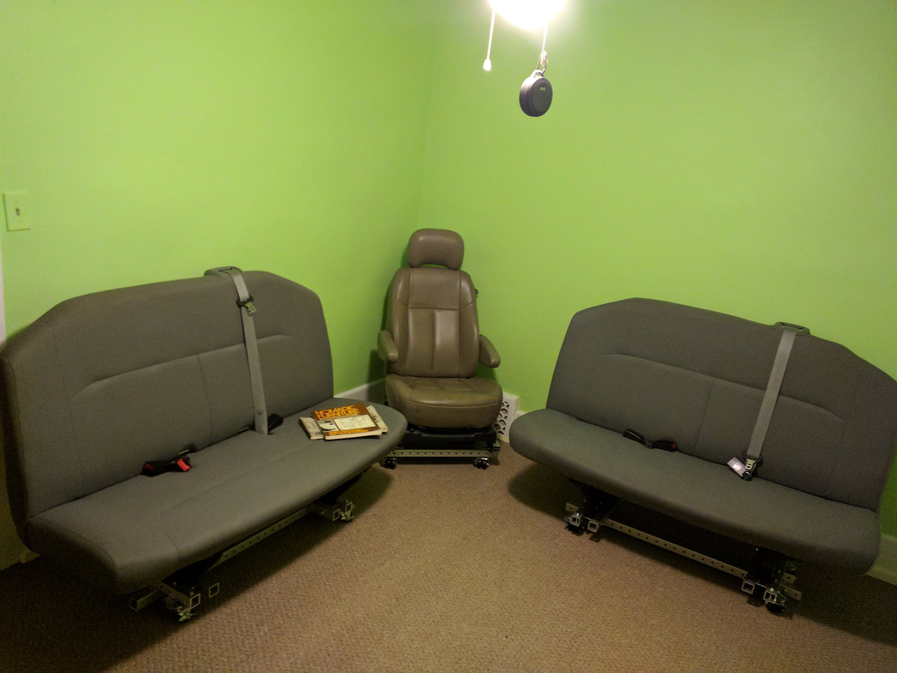
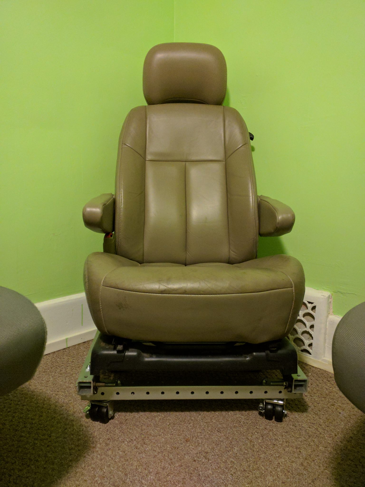
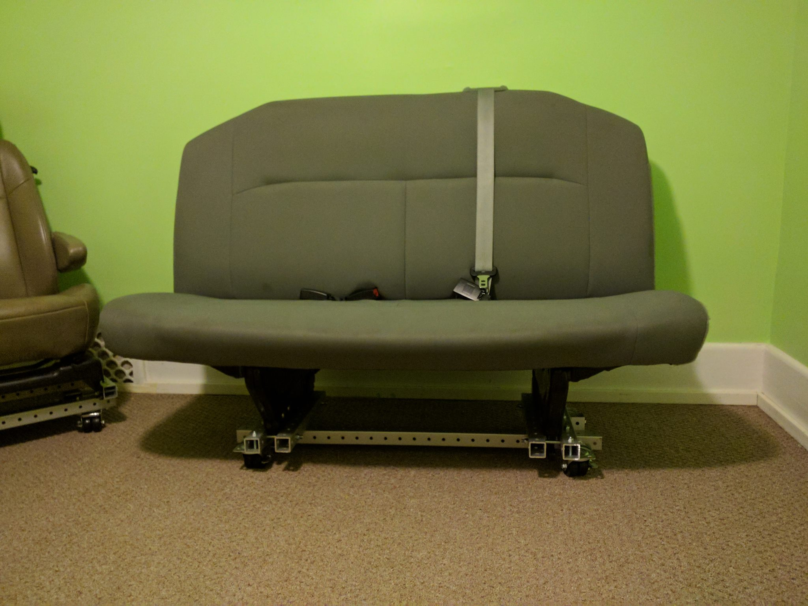

chairs revision 9016
^ Projects infobox ^^
| image | Chair.scad.png |
| designers | [[user:dinosaur|Mikey]], [[user:tim|Timothy Schmidt]] |
| date | 2021 |
| vitamins | |
| materials | |
| transformations | |
| lifecycles | |
| tools | [[wrenches|Wrenches]] |
| parts | [[frames|Frames]], [[nuts|Nuts]], [[bolts|Bolts]], [[end_caps|End caps]], [[plates|Plates]] |
| techniques | [[tri_joints|Tri joints]], [[shelf_joints|Shelf joints]] |
| git | |
| files | |
| suppliers | |
Introduction
One of the basic pieces of furniture, a chair is a type of seat. Its primary features are two pieces of a durable material, attached as back and seat to one another at a 90° or slightly greater angle, with usually the four corners of the horizontal seat attached in turn to four legs—or other parts of the seat's underside attached to three legs or to a shaft about which a four-arm turnstile on rollers can turn—strong enough to support the weight of a person who sits on the seat (usually wide and broad enough to hold the lower body from the buttocks almost to the knees) and leans against the vertical back (usually high and wide enough to support the back to the shoulder blades). The legs are typically high enough for the seated person's thighs and knees to form a 90° or lesser angle. Used in a number of rooms in homes (e.g. in living rooms, dining rooms, and dens), in schools and offices (with desks), and in various other workplaces, chairs may be made of wood, metal, or synthetic materials, and either the seat alone or the entire chair may be padded or upholstered in various colors and fabrics.
Chairs vary in design. An armchair has armrests fixed to the seat; a recliner is upholstered and under its seat is a mechanism that allows one to lower the chair's back and raise into place a fold-out footrest; a rocking chair has legs fixed to two long curved slats; and a wheelchair has wheels fixed to an axis under the seat.
Challenges
A person needs a place to sit and rest.
Approaches

Sitting is such a universal activity, that no single chair could cover even a large portion of use cases. We try to cover most cases with just two extremely minimal and flexible designs.
Portable chair v0.1
- ?x frame members
- Cord
- Stainless hardware
Rolling chair v0.1
- ?x frame members
- Cord
- Stainless hardware
- Locking casters
SuperChair

Notes
- storage cubby under the seat cushion
- cup holders
- casters


